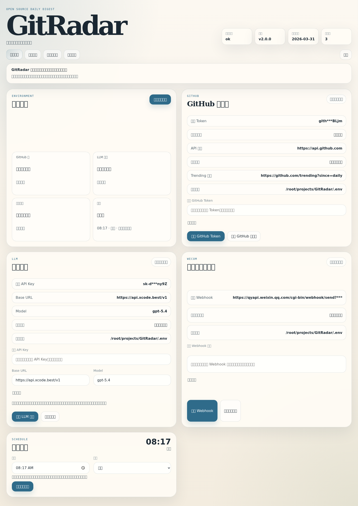
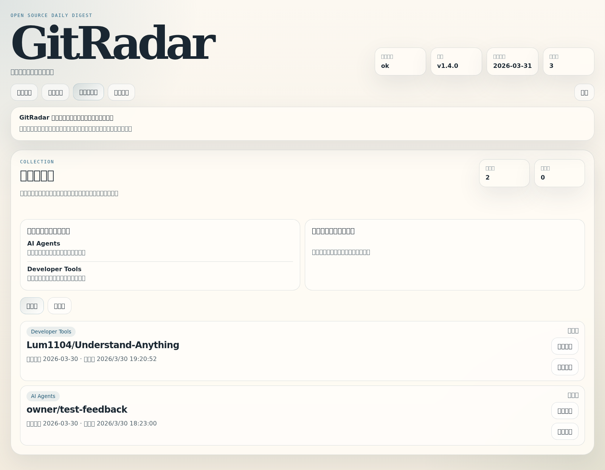
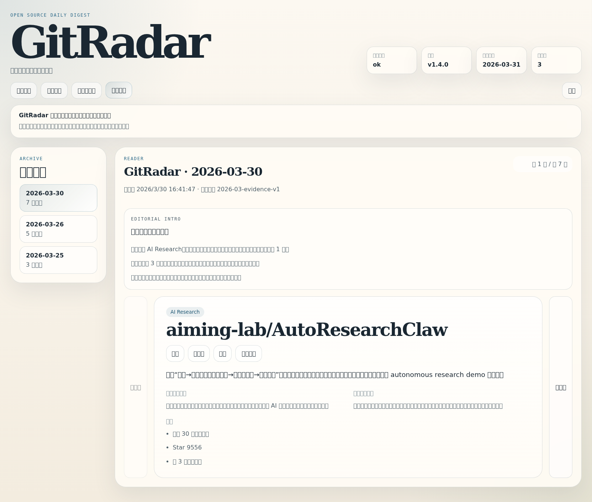

首页与环境状态
把调度、环境可用性指纹、主题入口和归档入口统一收口，先看系统是不是活的。
OPEN SOURCE INTEREST RADAR
它不是热榜搬运器，而是用候选信号、规则筛选、证据整理和中文编辑，把当天真正值得看的 GitHub 项目收敛成可解释日报，并把归档、反馈、偏好提示和环境验证统一进本地控制台。
REAL PRODUCT SURFACE
把调度、环境可用性指纹、主题入口和归档入口统一收口，先看系统是不是活的。

直接查看 GitHub、LLM、企业微信最近一次成功验证结果，不再靠“已配置”猜状态。

支持 `收藏 / 稍后看 / 跳过`，并在控制台里回看最近真正感兴趣和连续跳过的主题。

逐日阅读中文日报，先看总编前言，再看每条项目为什么值得看、为什么是现在。
HOW IT WORKS
`npm run generate:digest`、`npm run analyze:digest`、`npm run feedback:list`
`npm run build:web && npm run start:console` 后访问本地中文控制台。
`docker compose up --build` 常驻运行，保留配置、数据和归档。
START HERE